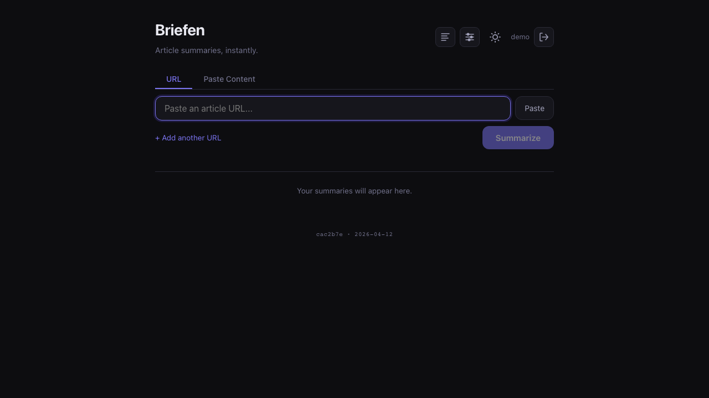

Briefen is a local-first article summarizer. Paste a URL, Jsoup fetches the article, and a local or cloud LLM summarizes it — cached in SQLite. No cloud dependencies by default. Everything runs on your server.
Free and open source — MIT license — no account required

Paste any URL or raw text. Jsoup extracts the article, PDFBox handles PDFs — then your chosen LLM summarizes it instantly.
Powered by Ollama out of the box — runs Gemma, Llama, and others entirely on your machine. No API key, no data leaving your server.
Plug in OpenAI or Anthropic with an API key when you want faster or higher-quality results. Switch models per summary.
Every summary is saved. Filter by read/unread, search, add notes and tags, and export the full list to Markdown.
Flutter app for Android and iOS. Share URLs directly from any browser, summarize in the background, and get a push notification when it's ready.
One-click summarize from Firefox (MV2) or Chrome/Edge/Brave (MV3). Sends the current tab's URL to your Briefen instance.
HTTP Basic Auth on every route. First-run browser setup creates the admin account. Multi-user with admin-managed accounts.
Single Docker image with embedded frontend. SQLite by default — no external services required. PostgreSQL available for larger deployments.
Browse and summarize your Readeck bookmarks directly from the app. Configure once, access your full bookmark library.
Requires Docker with Compose v2 (docker compose).
curl -o docker-compose.yml https://raw.githubusercontent.com/lucaslra/briefen/main/docker-compose.sample.yml
docker compose up -dOpen http://localhost:8080 — on first access you'll be prompted to create the admin account.
docker pull ghcr.io/lucaslra/briefen:latest